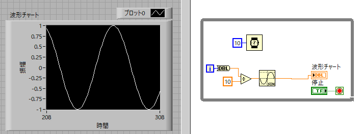
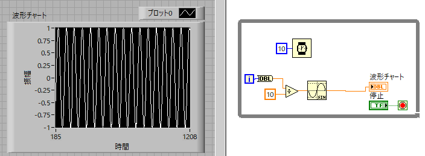
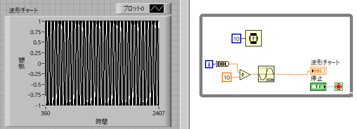
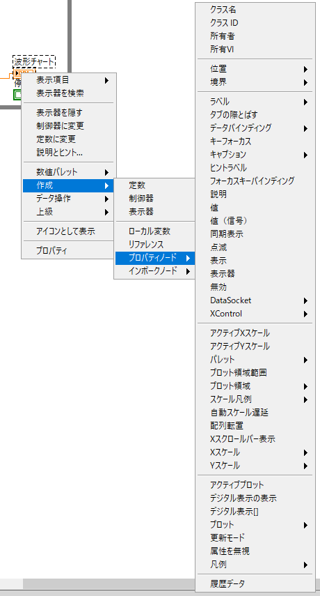
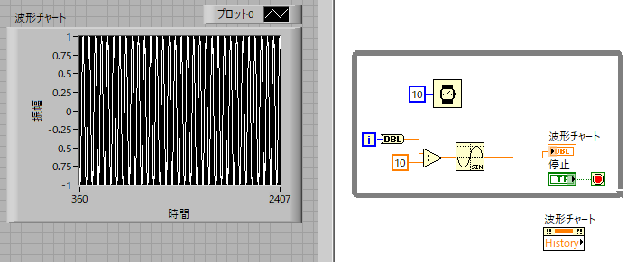
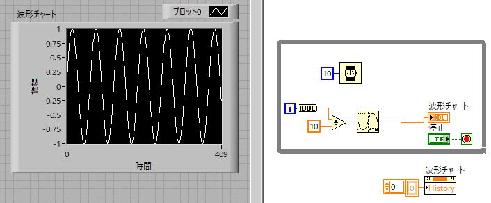

波形チャート
波形チャートは連続的なデータの表示に適しています．
ちょうど，オシロスコープのように．
実際に連続波形を表示してみましょう．

連続波形は正弦波，見やすいように待機アイコンを設置し，WhileLoopで動かしています．
これは簡単ですね．
横軸の値
上図では横軸は100データ表示しています．
自動スケールX，にチェックを入れて見ると，

となり，最大1024ポイント表示できます．この値を変更するには，
フロントパネル → 波形チャートのプロパティ → チャート履歴の長さ
の値を変更してみてください．2048にすると，

横軸が2048ポイントになることがわかります．この値は使用しているPCのメモリに依存します（参考）．
初期値
問題は，実行→停止→実行，と繰り返すと横軸が初期化されずに前回の値からスタートしてしまいます．
実行ごとに０からスタートさせるにはどうしたらよいでしょう？
そのためには，
プロパティノード
が必要となります．
ブロックダイヤグラム → 作成 → プロパティノード → 履歴データ
を実行します．

すると，このようなアイコンが現れますので，設置します．

このアイコンは右に端子があるので，
現在の状況を出力
状態になっています．これを，
右クリック → すべて書き込みに変更
にしてください．そして，左端子上で，
右クリック → 定数
で図のような０の配列を作ります．

実行すると，毎回０からスタートする波形チャートが完成します．